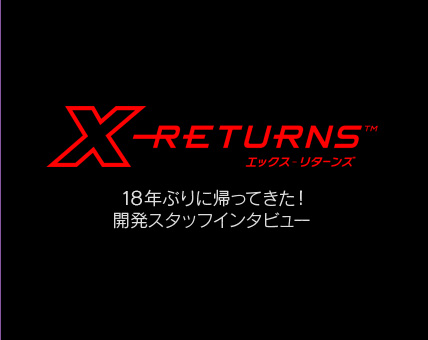

N.O.M
前作にあたる『X』はゲームボーイではじめての3Dシューティングゲームですよね。
呉服
はじめてどころか、これ以外ないんじゃないですか？（笑）
ディラン
他の人はやろうとしてなかったから（笑）。当時いた会社が3Dをテーマにして作った会社だったから、ゲームボーイでもファミコンでも、どのデバイスでも3Dを作ろうとしていたんです。ファミコンでも3Dができたのは、当時としては結構すごかったと思いますよ。
N.O.M
今回の『X-RETURNS』を制作されたきっかけは？
ディラン
実は何年も前から、任天堂の宮本茂さんに会うと、そのたびに口癖のように「『X』の続編はいつ作るの？」って言われていたんです。じゃあ、そろそろやっておかないといけないな、と（笑）。それで、昨年ちょうど提案するチャンスがあったので。
呉服
先にお話ししたとおり、最初はコンパクトなゲームだったんですが、ディランさんの熱意に押されまして（笑）。
ディラン
もうひとつは、前作に引き続いて戸高一生※4さんにサウンドで参加してもらえることになって、それじゃあ元の企画じゃ絶対物足りないなというのもありました（笑）。
一同
（笑）
※4 |
「戸高一生」…任天堂 情報開発本部制作部所属。数々のゲームのサウンドを手がける。『どうぶつの森』シリーズの「とたけけ」のモデル。 |
呉服
戸高からも、ディランさんに対抗するように、ゲームに非常にマッチした曲を作ったり、トンネルのテーマもゲームボーイ版のものを新しくアレンジし直したものを用意したりして（笑）。サウンドによって、『X-RETURNS』の魅力が高まりましたね。
ディラン
音楽、効果音どっちも素晴らしいね。タイトル曲だけでも鳥肌が立つくらい。
前田
ミッション※5の展開に応じて音楽も変わっていくんですよね。BGMでこんなにゲームの印象が変わるものなのかと、重要性を実感したタイトルでもあります。
※5 |
「ミッション」…『X-RETURNS』では、さまざまな惑星を探索し、ミッションを遂行することでゲームが進行していく。 |
N.O.M
ディランさんにとって、やはり『X』は思い入れのあるタイトルだったんですね。
ディラン
そうですね。はじめて任天堂さんとお仕事をしたタイトルだし、プログラムもデザインもグラフィックもがんばって作ったし。思い入れはありますね……。『X-3』も作りたいね、また18年後かもしれないけど（笑）。
N.O.M
前田さんから見て、制作中はどのような感じでしたか？
前田
私はアシスタントディレクターの立場で、ディランの意図を開発スタッフに伝えたりする役割でしたが、最初はシンプルなゲームだったのに、みるみるボリュームが増えていくのが心配で。
ディラン
でも、わりと私より妄想を膨らましていたりもしてたよね（笑）。
前田
確かに……。実際、ディランから止められたこともありました（笑）。
このゲームではいろいろなボスが登場するのですが、ボスの企画はもっとたくさんあったんです。ミッションに割り当てると全ミッションにボスが登場するくらいになっていたので、メリハリをつけるために削除しました。その分、複数のボスのアイデアを1つにまとめて多彩な動きをさせることができましたね。
あと、会話のバリエーションも増やしたんです。
N.O.M
前田さん、本来はどちらかと言えば止める立場ですよね（笑）。
前田
自分も小さい頃に遊んでいたゲームなので、まさか自分が作ることになるとは夢にも思っていませんでしたから。
ディラン
呉服さんにも『X』のエッセンスをすごくわかってもらっていて、「この惑星では砂嵐を起こしたら？」みたいな意見ももらいました。
池端さんからは「どうしても戦車を飛ばしたい」と（笑）。調整が大変かなとは思ったんですが、やはりそのネタも復活しました。
池端
ゲームボーイ版の思い出を語るときにも、一番最初に思い出すのが、ピラミッドからのテイクオフだったんです。18年も前のゲームの話なのに、すぐに出てくるくらいですし、それなら今作にも入れるべきだと強く推させていただきました。
ディラン
わりと全員でボリュームを増やす方向に動いたんです（笑）。
一同
（笑）